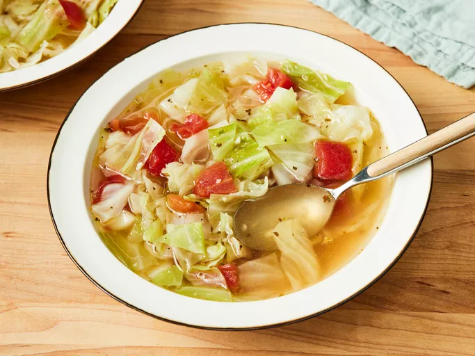

Healing Cabbage Soup

Description
Healing cabbage soup is a nutritious, detoxifying dish made with cabbage, carrots, onions, and garlic. Packed with fiber, antioxidants, and anti-inflammatory properties, it supports digestion and boosts immunity.
The savory broth adds richness, making the soup both comforting and cleansing. It's perfect for revitalizing the body, easing inflammation, and supporting overall well-being, whether enjoyed during illness or as a light meal.
Ingredients
- 3 tablespoons olive oil
- ½ onion, chopped
- 2 cloves garlic, chopped
- 2 quarts water
- 4 teaspoons chicken bouillon granules
- 1 teaspoon salt, or to taste
- ½ teaspoon black pepper, or to taste
- ½ head cabbage, cored and coarsely chopped
- 1 (14.5 ounce) can Italian-style stewed tomatoes, drained and diced
Recipe
- In a large stockpot, heat olive oil over medium heat. Stir in onion and garlic; cook until onion is transparent, about 5 minutes.
- Stir in water, bouillon, salt, and pepper. Bring to a boil, then stir in cabbage. Simmer until cabbage wilts, about 10 minutes.
- Stir in tomatoes. Return to a boil, then simmer 15 to 30 minutes, stirring often.
- Serve hot and enjoy!